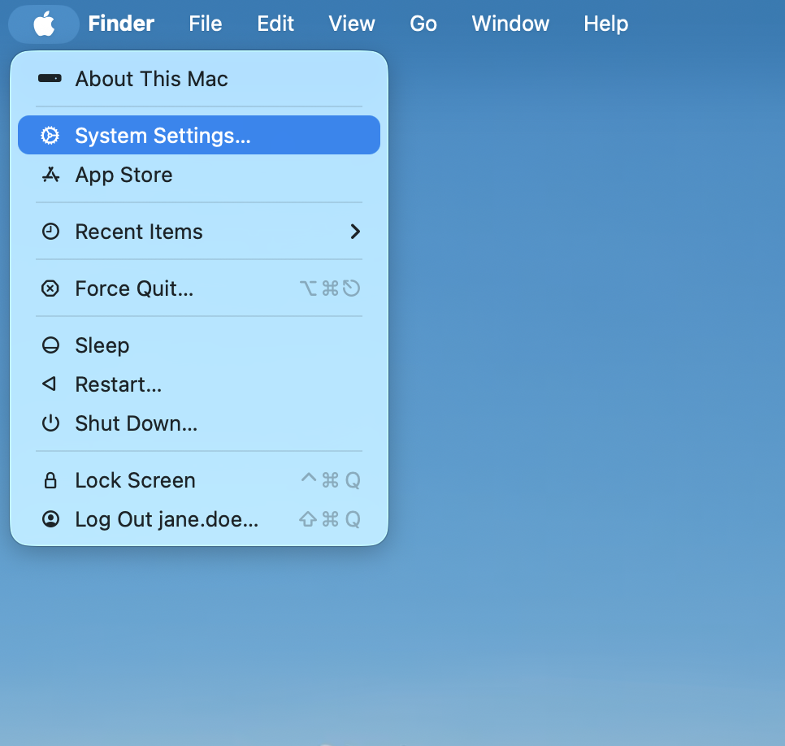
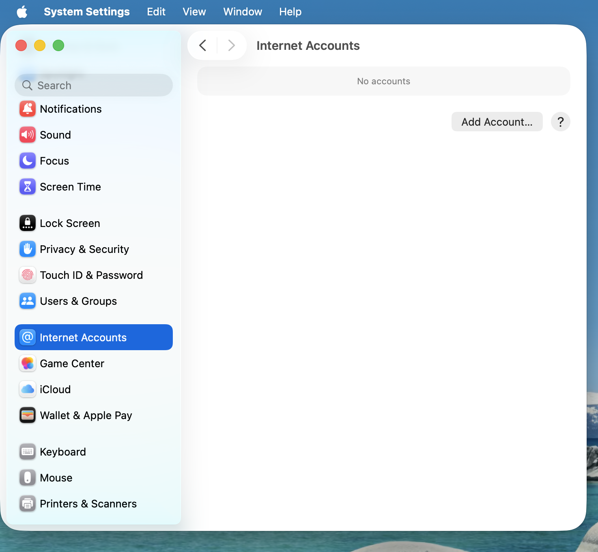
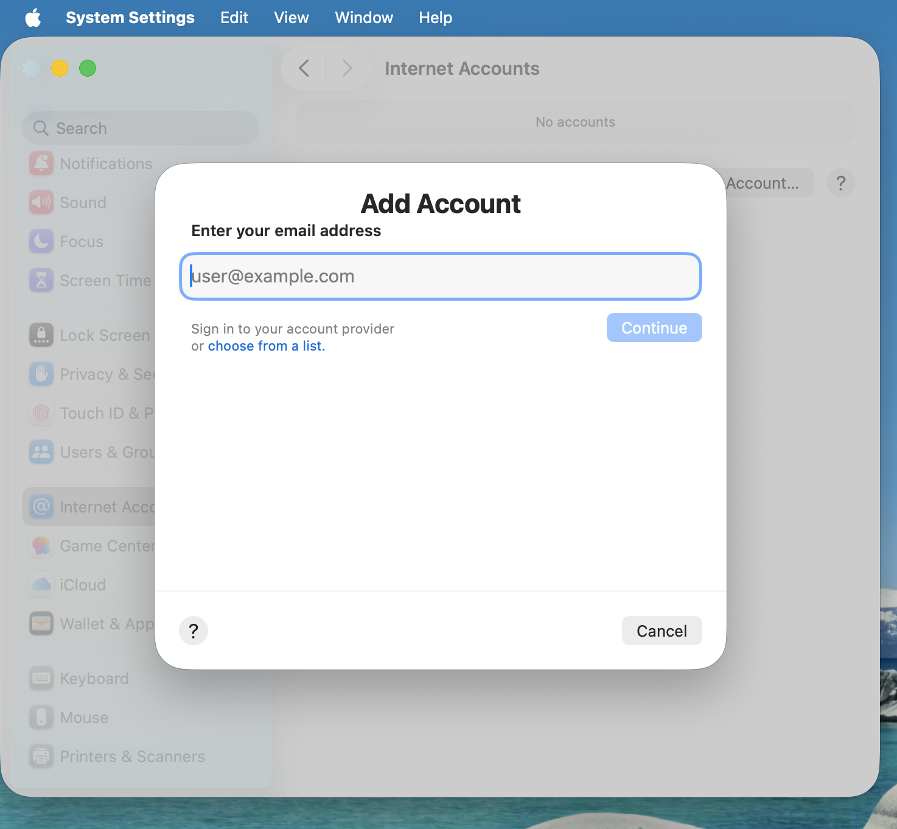
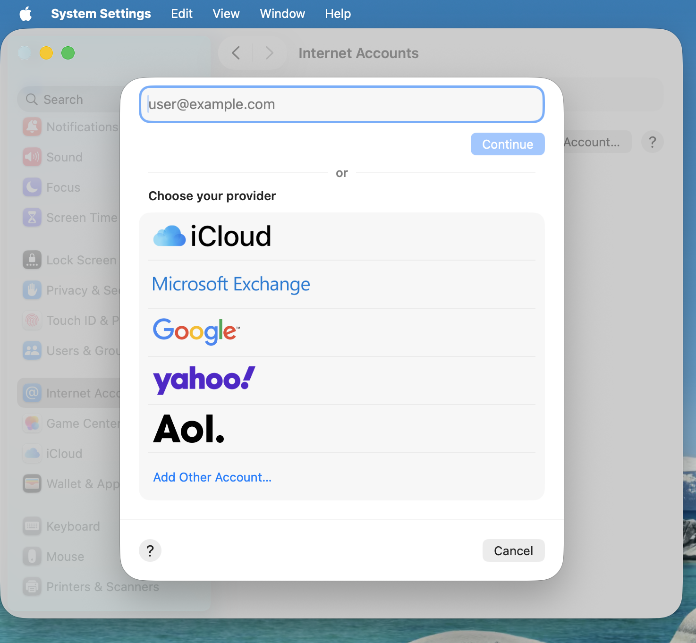
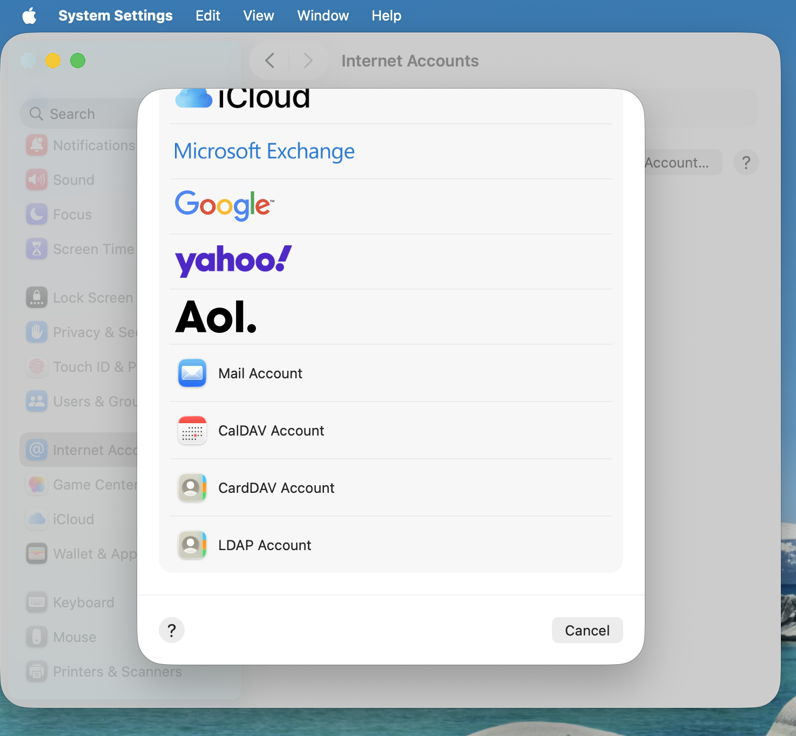

Synchronizing with macOS
Setup your Accounts
In the following steps you will add CalDAV (Calendar) and CardDAV (Contacts) to your macOS integrated Calendar and Contacts applications. At the time of writing this guide, macOS is at version 26.3.1.
Click on the Apple logo in the top left corner of your screen and select System Settings… from the dropdown menu.

Navigate to Internet Accounts:

Click on the small blue choose from a list.

Click on add Other Account…

Select CalDAV Account for calendar and CardDAV Account for contacts.

Observera
You can not setup Calendar/Contacts together. You need to setup them separately.
Select Manual as Account Type and type in your respective credentials:
Username: Your Nextcloud username or email
Password: Either your password or if you use 2FA your generated app-password/token (Learn more).
Server Address: URL of your Nextcloud server (e.g.
https://nextcloud.yourdomain.com)
Click on Sign In.
Troubleshooting
macOS does not support syncing CalDAV/CardDAV over non-encrypted
http://connections. Make sure you havehttps://enabled and configured on server- and client-side.Self-signed certificates need to be properly set up in the macOS keychain.